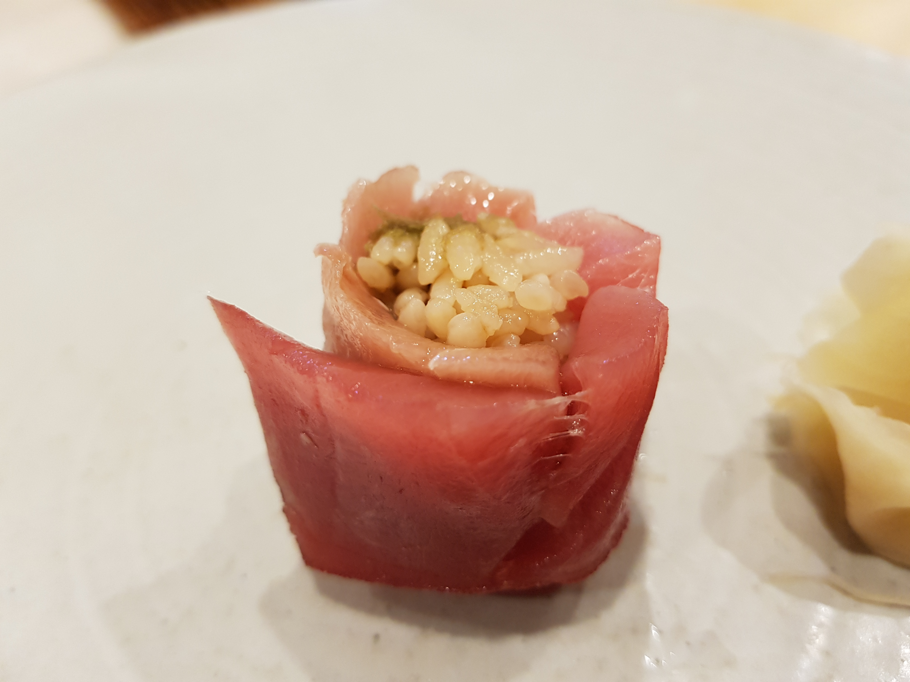
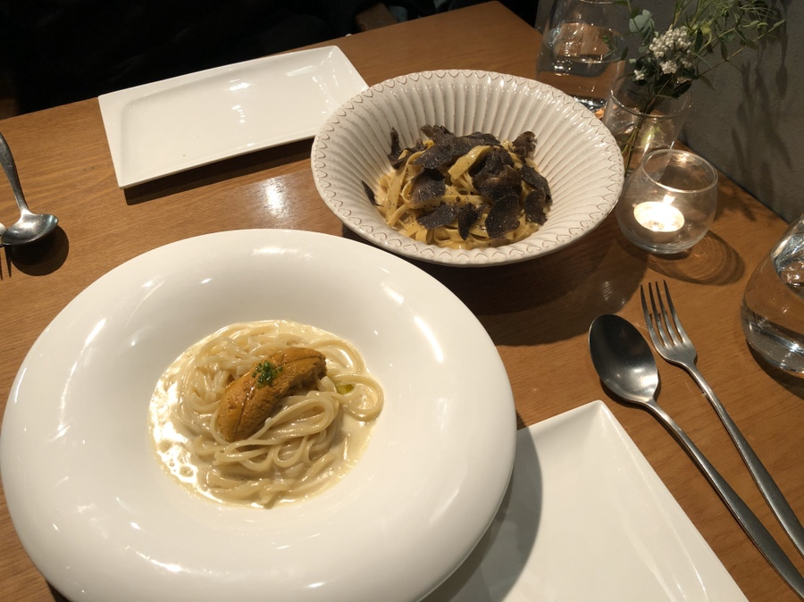

먹고 싶은 것!
- 메인 페이지
- 먹고 싶은 것
- 가보고 싶은 나라
- 스시 카나에
대한민국 최고의 숙성 스시 집 타쿠미곤에서 나온 셰프가 하는 스시 맛집... 타쿠미곤에 비해 매우 착한 가격으로 한 번 꼭 가보고 싶은 음식점

- 파스토
이태리 음식점 중 가보고 싶은 파스타 전문점, 오래된 만큼 검증된 맛! 대표 메뉴 우니 파스타!

- le continental
프랑스 음식점! 가장 프랑스 현지에 가까운 맛으로 유명하다! 취향에 따라 매우 호불이 갈린다고 함!